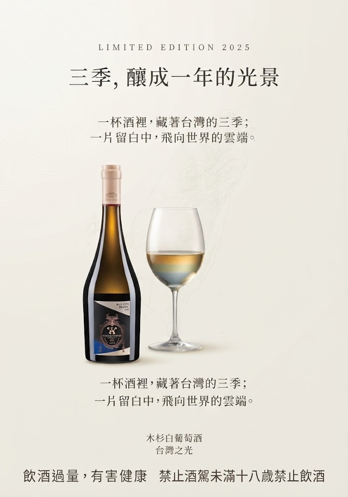

親愛的，你若問我，一年有多長？
我會說，一年不只是十二個月的流轉， 不只是日曆上被撕去的三百六十五頁。 一年，可以是三季的總和——是冬的蟄伏、 春的甦醒、夏的綻放，以及那一場颱風過後， 土地依然願意繼續呼吸的溫柔。
而這一切，都釀在台灣這座島嶼的風土裡。 不是移植自異鄉的品種，不是模仿而來的風格， 是台灣原生品種木杉， 在這塊土地上，用自己的語言，寫下自己的名字。
而今年，這個名字，被寫上了天際—— 星宇航空頭等艙選用。 這不只是通路，這是一張飛向世界的頭等艙機票， 是台灣風土被國際品味看見的時刻。
低溫多雨的季節， 像一段漫長的沉思。 葡萄藤在安靜之中累積， 土地則保存著下一季的力量。
乾燥而俐落的春季， 像一句清晰的起筆。 萌芽、生長， 一切重新開始。
炎熱的陽光帶來成熟， 颱風則帶來命運的轉折。 風雨過後， 土地依然繼續呼吸。
來自三處葡萄園， 它們像三位性格迥異的詩人， 各自依循冬、春、夏的生長週期， 在同一片土地上寫下不同的句子。
這一年的冬天，老天給了我們低溫多雨， 像一段漫長的沉思； 乾燥的春季，像一句俐落的起筆； 炎熱的夏季，像一場盛大的燃燒； 然後是颱風帶來的雨水， 像命運突然插入的驚嘆號。
那些季節的輪廓， 並沒有在釀造的過程中消失。 它們被完整地保留在酒裡， 一層一層地堆疊出層次， 也堆疊出平衡。
那不是人為的調配， 而是葡萄園自己生成的和諧。 是台灣的冬、台灣的春、台灣的夏， 聯手寫下的一封情書。
成熟而明亮的果實氣息， 帶著柔和的甜美感。
細緻、柔和， 為香氣帶來圓潤的質地。
帶有台灣熟悉的熱帶果香， 清甜而具有辨識度。
花香與細微辛香交織， 讓整體香氣更具層次。
清晰的酸度支撐中段的圓潤感， 讓酒體保持明亮。
細緻的礦物感延續至尾韻， 留下清晰而悠長的收束。
三季的差異，
凝聚成木杉清晰、細緻而完整的表達。
親愛的，這一年的時光，我們都歷經了變化。 世界動盪，氣候無常，生活有時像一場又一場的颱風， 把我們吹得東倒西歪。
但木杉告訴我： 歷經變化，依然可以明亮而平衡。 那不是天真，那是一種踏實的勇氣。
是知道風雨會來，也知道風雨會走， 而這座島嶼的土地會記得每一滴雨水， 並在適當的時候，把它釀成希望。
如今，這道光，正準備在三萬英尺的高空， 為來自世界的旅人，斟上一杯屬於台灣的優雅。
三季的差異，可以凝聚成美好。
一年的變化，可以釀成一份，
留給當下的溫柔。